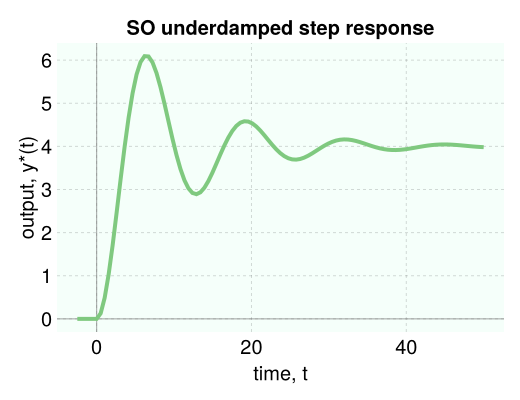

Controlz.jl
Controlz.jl is a Julia package to explore concepts in the simulation of process dynamics and control of linear, time-invariant (LTI) systems using transfer function representations.
For example, to simulate the unit step response of a second-order, underdamped system characterized by the transfer function
\[g(s) = \dfrac{4}{4s^2 + 0.8s +1}\]
the output $Y(s)$ follows from $g(s)U(s)$, where $U(s)$ is the input.
using Controlz
g = 4 / (4 * s ^ 2 + 0.8 * s + 1) # construct transfer function
U = 1 / s # unit step input, U(s)
Y = g * U # system output, Y(s)
data = simulate(Y, 50.0) # simulate until t = 50
viz_response(data, plot_title="SO underdamped step response")
install the Controlz.jl package in Julia
- in the Julia REPL: go into package mode by typing
]. Thenadd Controlz#master. ThenBackspaceto exit package mode. - in a Jupyter or Pluto Notebook:
using Pkg; Pkg.add("Controlz#master"). (this way also works in the REPL)
for visualization, Controlz.jl relies on PyPlot.jl, a Julia interface to matplotlib in Python. see here if you have trouble installing PyPlot.jl.